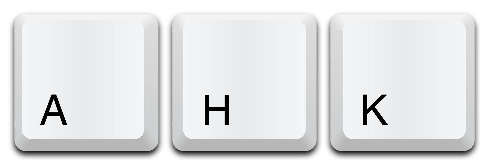
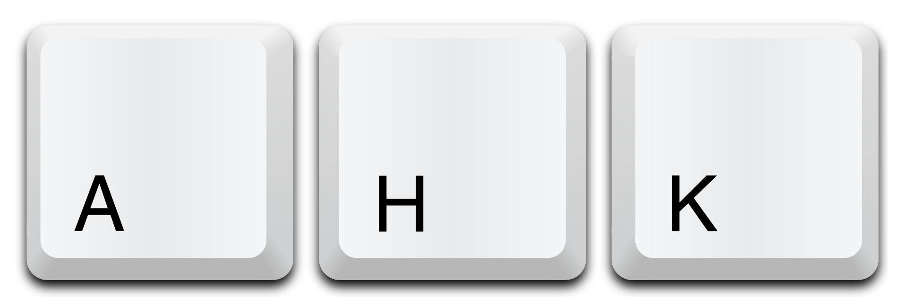

Do you use windows? If yes you have to use AutoHotkey ! Is a free, open-source scripting language for Windows that allows users to easily create small to complex scripts for all kinds of tasks such as: form fillers, auto-clicking, macros, etc.
Here I've published my small collection of AutoHotkey scripts. Some scripts are written by me, some are modified by me, some are completely created by others.
Code:
- ∘ MouseToShiftAndCtrl.ahk - I have a chinese mouse with two buttons on it. I decided to remap their function as ctl and shift. These are extremely useful while 3D modelling, especially if you use Fusion360 or SolidWorks.
- ∘ MouseRemoveLetters.ahk - sometimes downloaded files... are named with too many characters..., always in the same place..., this is a quick solution to cancel them. I usually pause the main mouse script and start this one for the short time period i need it.
- ∘ ItalianKeyboardLimits.ahk - Italian keyboard layout misses important and useful keys, let's add them back. I only included the ones I use the most, but suggestions are welcome.